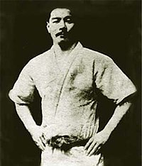

Основатель джиу-джитсу
{kind=link}
Хисамори Такэноути - Джиу-джицу, или джиу-джитсу, точнее дзюдзю́цу (яп. 柔術 [дзю:дзюцу] (инф.) ← 柔 [дзю] «мягкий, гибкий, податливый, уступчивый» + 術 [дзюцу] «техника, способ»; дословно — «искусство мягкости») — общее название, применяемое для японских боевых искусств, включающих в себя техники работы с оружием и без него; искусство рукопашного боя, основным принципом которого является «мягкая», «податливая» техника движений.Для копирования текста нажмите - <Ctrl>+<C> http://www.jjkaluga.ru/ujitsu_history
Искусство джиу-джитсу берет своё начало в периоде Сэнгоку японской истории. Хисамори Такэноути, военный тактик и правитель провинции Мимасака, объединил различные военные искусства, которые использовались в ближнем бою в ситуациях, когда оружие оказывалось неэффективным. В отличие от соседних Китая и Кореи, боевые искусства которых сконцентрировались на ударных техниках, японские техники рукопашного боя сфокусировались на бросках, обездвиживании, блокировке и удушении, поскольку ударная техника неэффективна против доспехов. Кроме того некоторые оригинальные формы джиу-джитсу, такие как такэноути-рю, интенсивно использовали уворачивание и контратаки длинному холодному оружию, такому как мечи и копья, при помощи кинжалов и другого короткого холодного оружия. В начале XVII века в период Эдо джиу-джитсу получило стимул к развитию благодаря жестким законам против военных действий, наложенным сёгунатом Токугава, охваченным влиянием китайской философии неоконфуцианства, которая проникла в Японию в ходе Имджинской войны с Кореей и широко распространилось благодаря таким философам, как Фудзивара Сэйка[en]. В это время оружие и доспехи превратились в домашние декорации, так что рукопашные бои процветали в качестве формы самообороны, и были созданы новые техники с учётом невооружённости противника. Китайские послы, направленные в Японию для установления мира и снижения уровня торговли Японии с Голландией, привезли в Японию китайское военное искусство ушу, и различные ударные техники были включены в джиу-джитсу. Однако в середине периода Эдо количество ударных техник серьёзно сократилось, поскольку они оказались менее эффективны и требовали много энергии, особенно сильные удары руками и ногами. Оставшиеся удары в основном были направлены в жизненно-важные точки тела, определённые китайской медициной, и жизненно-важные области выше плеч, обнаруженные в ранних техниках джиу-джитсу. В этот же период начали проводиться бои между различными школами джиу-джитсу, которые стали популярным времяпрепровождением для воинов при мирном едином правительстве. Из этих поединков в практику вошли рандори (англ. randori), свободные единоборства, получившие развитие в результате боев различных стилей разных школ без цели убить противника.[4][5]